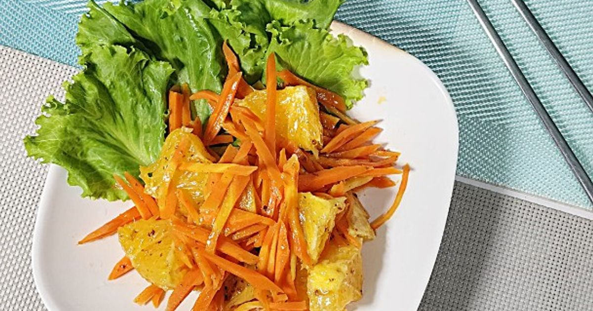
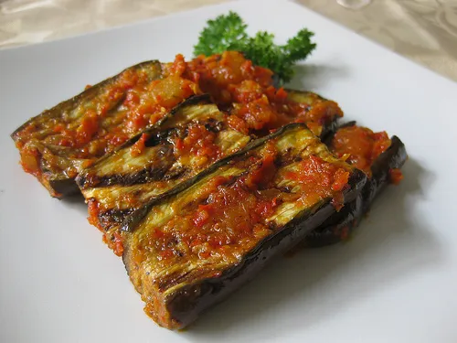
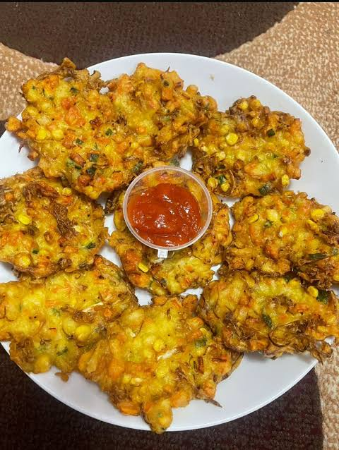
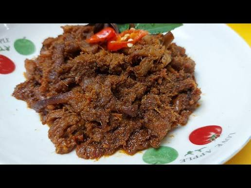
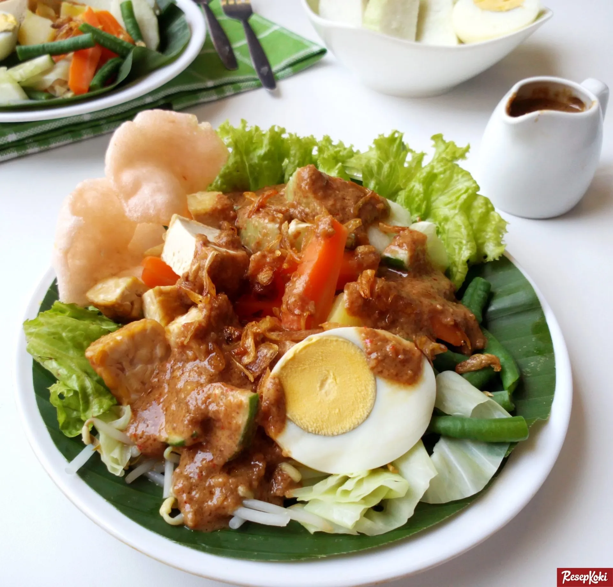

Menu andalan sayGo
Enam olahan sayuran yang paling sering dipesan pelanggan kami.

Baru
Salad Wortel Jeruk
Wortel serut, jeruk, dan kacang panggang dengan dressing wijen.
Rp 22.000

Pedas
Terong Balado Bakar
Terong dibakar lalu disiram sambal balado, cocok dengan nasi hangat.
Rp 20.000

Vegan
Bakwan Jagung Sayur
Jagung manis, kol, dan wortel digoreng garing, disajikan lima potong.
Rp 15.000

Vegan
Rendang Jamur Tiram
Jamur tiram dimasak dengan bumbu rendang sampai meresap dan gurih.
Rp 28.000

Vegan
Gado-Gado sayGo
Sayur rebus segar dengan tahu, tempe, dan saus kacang buatan sendiri.
Rp 26.000